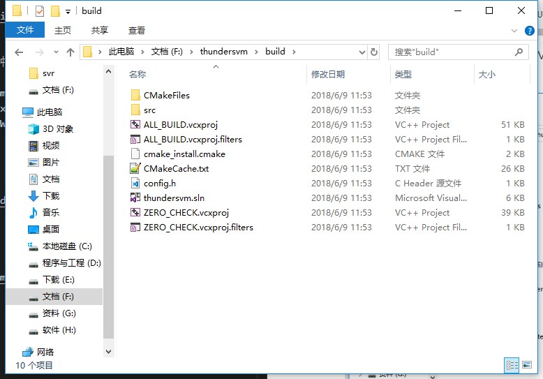
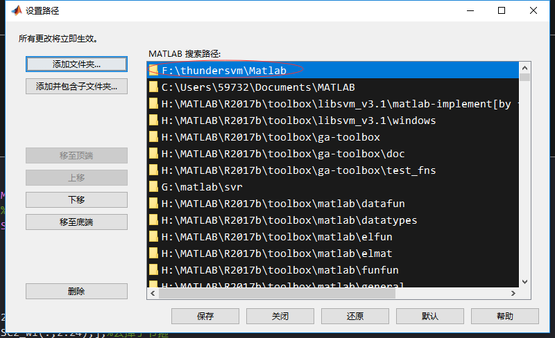
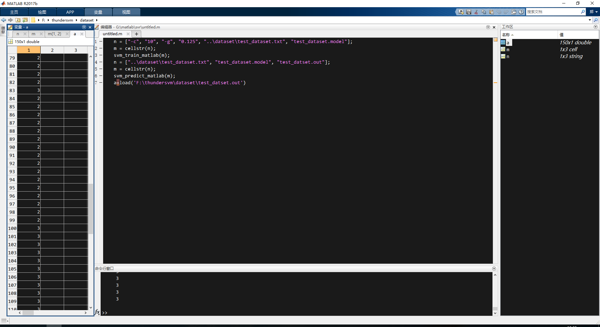

学习
Matlab使用ThunderSVM
- 2018-06-08
- NAke
Matlab使用ThunderSVM
我决定用这个SVM库加速我的svr模型训练。我的系统是Windows，Matlab版本是2017b。我需要自己编译安装入坑一波。官方手册
准备
cmake
在cmake官网下载Windows win64-x64 Installer并安装。Visual C++
这个我的电脑已经安装了Visual Studio 2015。我可以在matlab中查看我的c++编译器版本>> mex -setup c++ MEX 配置为使用 'Microsoft Visual C++ 2015 Professional' 以进行 C++ 语言编译。 警告: MATLAB C 和 Fortran API 已更改，现可支持 包含 2^32-1 个以上元素的 MATLAB 变量。您需要 更新代码以利用新的 API。 您可以在以下网址找到更多的相关信息: http://www.mathworks.com/help/matlab/matlab_external/upgrading-mex-files-to-use-64-bit-api.html。 要选择不同的 C++ 编译器，请从以下选项中选择一种命令: Microsoft Visual C++ 2015 mex -setup:H:\MATLAB\R2017b\bin\win64\mexopts\msvcpp2015.xml C++ Microsoft Visual C++ 2015 Professional mex -setup:C:\Users\59732\AppData\Roaming\MathWorks\MATLAB\R2017b\mex_C++_win64.xml C++CUDA
如果需要使用gpu加速，需要安装CUDA 7.5以上版本。(必须先安装Visual Studio)
Windows版安装
下载工程。
手动下载zip的话，文件夹名不一样，需要修改。git clone https://github.com/zeyiwen/thundersvm.git构建Visual Studio工程
进入文件夹中。cd thundersvm mkdir build cd build cmake .. -DCMAKE_WINDOWS_EXPORT_ALL_SYMBOLS=TRUE -DBUILD_SHARED_LIBS=TRUE -G "Visual Studio 14 2015 Win64"这个
Visual Studio 14 2015 Win64是因为我安装了Visual Studio 15，对应的cmake选择的版本是这个，成功后生成如下文件。
编译
打开thundersvm.sln。选择生成->生成ALL_BUILD。成功后如下：5>------ 已启动生成: 项目: ALL_BUILD, 配置: Debug x64 ------ 5> Building Custom Rule F:/thundersvm/CMakeLists.txt 5> CMake does not need to re-run because F:/thundersvm/build/CMakeFiles/generate.stamp is up-to-date. ========== 生成: 成功 5 个，失败 0 个，最新 0 个，跳过 0 个 ==========
测试
我这里直接测试Matlab的使用。
添加路径
将他的matlab函数添加到默认路径。
程序
因为我是Windows，所以官方的例子的斜杠需要更换n = ["-c", "10", "-g", "0.125", "..\dataset\test_dataset.txt", "test_dataset.model"]; m = cellstr(n); svm_train_matlab(m); n = ["..\dataset\test_dataset.txt", "test_dataset.model", "test_datset.out"]; m = cellstr(n); svm_predict_matlab(m); a=load('F:\thundersvm\dataset\test_datset.out')svm分类结果输出如下：
